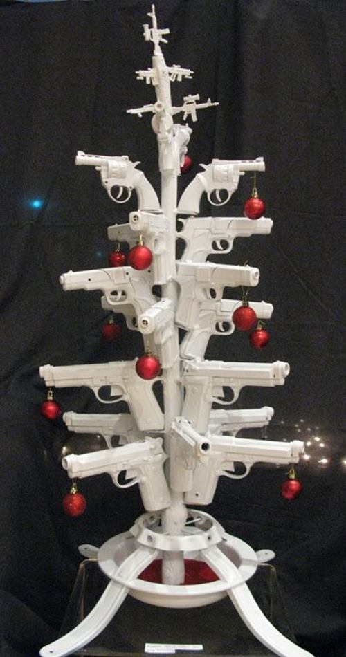
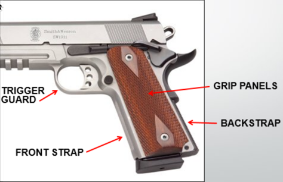

NC Concealed Carry Handgun Training

Laws Governing Concealed Carry And Use Of Deadly Force
Instructor: Eric Starr
Introduction
North Carolina has a Concealed Carry Handgun law in place that allows qualifying citizens of our State the opportunity to obtain a permit to carry a concealed handgun.
- complete a required training in:
- the use of deadly force ... AND
- carrying a concealed handgun
- demonstrate proficiency in the use of the handgun
Why Is The Training Required?
With the right to carry a concealed handgun, comes a tremendous responsibility.
The person carrying the handgun must have:
The person carrying the handgun must have:
- complete knowledge of handgun safety
- knowledge of the laws regarding use of force
- the ability to use the weapon safely and in a responsible manner
Legal Issues
(1 of 9)
Legal Issues
Common Law vs. Statutory Law
Common Law
Common Law is defined as law that has been developed on the basis of preceding rulings by judges.
Common Law is also known as case law and is of two types:
Common Law is also known as case law and is of two types:
- one where judgments passed become new laws where there are no statutes
- and the other where judges interpret the existing law and determines new boundaries and distinctions.
Statutory Law
Statutory laws are written laws passed by legislature.
- Federal
- State
- County
- Local Municipalities
Use of Force
When is 'Use of Force' Justified? ... When:
a.
a.
The citizen actually believes deadly force is necessary to prevent an
imminent threat of death, great bodily harm, or sexual assault
AND
Use of Force
When is 'Use of Force' Justified? ...continued...
b.
b.
The facts and circumstances prompting that belief would cause a person
of ordinary firmness to believe deadly force was necessary to prevent an imminent threat of death,
great bodily harm, or sexual assault,
AND
Use of Force
When is 'Use of Force' Justified? ...continued...
c.
c.
The citizen using deadly force was not an instigator or aggressor who voluntarily provoked, entered, or continued the conflict leading to deadly force,
AND
Use of Force
When is 'Use of Force' Justified? ...continued...
d.
d.
Force used was not excessive- greater than reasonably needed to overcome the threat posed by a hostile aggressor.
Use of Force
When is 'Use of Force' Justified? ...continued...
e-1.
e-1.
Retreat: A citizen faced with an imminent threat of death or great bodily injury generally does not have a duty to retreat prior to using deadly force, when all the other elements of self defense are satisfied. Regardless, it may be a good idea to retreat to safety if possible, as this may avoid use of deadly force, but also may remove the citizen from a situation that could result in loss of his own life.
Use of Force
When is 'Use of Force' Justified? ...continued...
e-2.
e-2.
Retreat: However, a duty to retreat does exist where the citizen was the initial aggressor or instigator in the incident that caused him to eventually use deadly force in self-defense.
Use of Force
When is 'Use of Force' Justified? ...continued...
e-3.
e-3.
If the aggressor completely withdraws from this confrontation, and clearly communicates this to his adversary, the right to use deadly force in self defense is restored if all the requirements for the use of deadly force in self defense are still met.
Use of Force
Discussion Points: Is Use of Force Justified When:
- From in your house you look out and see someone stealing your car? NO!
- When someone about your size hits you without provocation? NO!
- When a larger high-school boy is bullying your middle-school son? NO!
Common Law
Immediate Danger
Imminent Harm means “immediate danger”, or is “about to” happen.
Common Law
Serious Bodily Injury
Great Bodily Harm is not defined; however the statutory definition of “serious bodily injury” contained in the North Carolina Criminal Law
provides guidance as to the type of injuries may qualify as great bodily harm.
“Serious bodily injury” includes injury that creates a substantial risk of death, or that causes serious permanent disfigurement, coma, a permanent or protracted condition that causes extreme pain, or permanent or protracted loss or impairment of the function of any bodily member or organ, or that results in prolonged hospitalization.
“Serious bodily injury” includes injury that creates a substantial risk of death, or that causes serious permanent disfigurement, coma, a permanent or protracted condition that causes extreme pain, or permanent or protracted loss or impairment of the function of any bodily member or organ, or that results in prolonged hospitalization.
Common Law
Sexual Assault
Sexual Assault
A “sexual assault “ would include rape, sexual offense, or forcible crime against nature or attempts to do any such act. (NCPI Crim. 308.70, FN 1)
*Not all sexual assaults justify the use of deadly force! Much of the law on justified self defense in North Carolina was written before the Legislature redefined sexual offenses in this state.
*Not all sexual assaults justify the use of deadly force! Much of the law on justified self defense in North Carolina was written before the Legislature redefined sexual offenses in this state.
Common Law
Sexual Assault
Basically, there are two categories of sexual offense:
Therefore, if it’s not rape it is sexual assault. Many sexual assault offenses do not meet the standard for inclusion in the justified self defense formula. ONLY sexual assaults that have a risk of death or great bodily harm should be included.
- Rape
- Sexual Assault
Therefore, if it’s not rape it is sexual assault. Many sexual assault offenses do not meet the standard for inclusion in the justified self defense formula. ONLY sexual assaults that have a risk of death or great bodily harm should be included.
Common Law
Excessive Force
A citizen has the right in self defense to use only such force as reasonably appeared necessary under the circumstances to protect themselves
from death or great bodily harm. In determining the amount of force necessary, and in order to avoid excessive force, the citizen should
consider the size, age and strength of the citizen as compared to the attacker, the fierceness of the assault, if any, upon the citizen,
whether the attacker possessed a weapon, and the reputation of the attacker for danger and violence, and any other circumstances relevant to
this issue. (NCPI Crim. 308.45A)
Common Law
Excessive Force
Where an assault being made upon a citizen is insufficient to give rise to a reasonable apprehension of death or great bodily harm, then the
use of deadly force by the citizen to protect himself from bodily injury or offensive physical contact is excessive force.
( State v Clay, 297 N.C. 555 (1979))
( State v Clay, 297 N.C. 555 (1979))
Common Law
Aggressor
A citizen who is found to be an aggressor voluntarily provoking the conflict, or who used excessive force can be convicted of voluntary
manslaughter even though the use of deadly force complied with the other requirements of self-defense. An instigator, or person using
excessive force, is not excused from all criminal liability, but may be guilty of a lesser degree of homicide.
Common Law
Aggressor
A citizen who is an aggressor voluntarily provoking a conflict leading to deadly force can avoid criminal responsibility for deadly
force only if the aggressor attempts to withdraw from the conflict before using deadly force and give notice of withdrawal to the
adversary.
Common Law
Aggressor
“One enters a fight voluntarily if one uses toward one’s opponent abusive language which, considering all of the circumstances,
is calculated and intended to bring on a fight.”
(From NCPI Crim. 206.310)
A citizen who provokes a fight through an unlawful assault would likewise be considered an aggressor.
(John Rube, The Law of Self Defense in North Carolina)
(From NCPI Crim. 206.310)
A citizen who provokes a fight through an unlawful assault would likewise be considered an aggressor.
(John Rube, The Law of Self Defense in North Carolina)
Common Law
Deadly Force in Defense of Others
A citizen may intervene and use deadly force in defense of another person when, under the facts and circumstances, it reasonably
appeared necessary to save the other person from an imminent threat of death, great bodily harm, or sexual assault, but only to
the extent the other person was entitled to use deadly force in self defense.
Common Law
Deadly Force in Defense of Others
Excessive force in defense of others is not allowed, and neither the intervener nor the person threatened can be an instigator
voluntarily provoking the conflict for deadly force to be used. If you are not sure of the circumstances that initiated the action,
it would be advisable to contact a law enforcement agency or attempt to assist using less lethal means rather than immediately
imposing the threat of deadly force.
Common Law
Deadly Force MAY NOT be Used:
a-1. To stop a simple assault.
While a simple assault may be truly terrifying, the law only allows the victim to resist force with
equivalent force. Force used to resist a simple assault must be proportionate to the assault. Even a real and legitimate fear
of greater injury, standing alone, does not justify use of deadly force.
When does a simple assault become an imminent threat of death? When can a victim use deadly force to repel an unarmed attacker? The exact point in time a simple assault becomes aggravated or deadly in nature is often unclear. Repeated blows to vital body areas, choking, continued beating on a helpless or weaken victim, are some indicators.
When does a simple assault become an imminent threat of death? When can a victim use deadly force to repel an unarmed attacker? The exact point in time a simple assault becomes aggravated or deadly in nature is often unclear. Repeated blows to vital body areas, choking, continued beating on a helpless or weaken victim, are some indicators.
Common Law
Deadly Force MAY NOT be Used:
a-2. To stop a simple assault.
Because the law requires retreat from a simple assault, but does not require retreat from a murderous or felonious assault, an
assault victim is once again faced with a decision: when does a simple assault become murderous assault? No clear answer exists
for the multitude of circumstances constituting an assault.
Common Law
Deadly Force MAY NOT be Used:
b. Because of the use of violent language.
Violent language often leads to violent acts, but language alone does not justify deadly force.
Common Law
Deadly Force MAY NOT be Used:
c. Because you are a victim of past violence and fear future violence.
The law requires that there be an imminent threat of death or great bodily harm. The threat must be an imminent danger of death, not
remote and uncertain in time and place. If the facts and circumstances are not reasonably apprehended as an immediate danger of death
Here and Now, deadly force in self-defense is not allowed as a Justified excuse for homicide.
Common Law
Deadly Force MAY NOT be Used:
d. Because a trespasser refuses to leave
Trespassers may be in violation of the law, but the law does not allow deadly force to end the trespass. While non-lethal force is
allowed against a trespasser deadly force is not. Old court cases established sequence for using Force to eject trespassers: first,
words must be used; second, if words do not work then gentle hands may be laid on the trespasser; if gentle hands do not work, the
owner may use whatever force is necessary to remove the trespasser, but may not use of force likely to kill or cause great bodily harm.
The prohibition against using deadly force to expel a trespasser does not apply to a trespasser who is immediately threatening death,
serious injury, or sexual assault.
Common Law
Deadly Force MAY NOT be Used:
e. To arrest a criminal or prevent criminals escape.
North Carolina law does not give a citizen the right to make a citizen's arrest. Since the power to make a citizen's arrest does not
exist, the right to use deadly force to affect an arrest or prevent escape is not given to citizens. No matter how serious a crime a
citizen cannot shoot to stop a fleeing criminal.
Citizens have limited power to detain under North Carolina General Statute 15A-404(c)
Citizens have limited power to detain under North Carolina General Statute 15A-404(c)
Common Law
Use of Force to Protect Property:
The law does not permit the use of deadly force solely to protect property, or to prevent theft, or to regain stolen property. An owner can
defend his or her property using reasonable and necessary Force but not deadly force. Non-deadly force to regain possession of stolen
property is lawful, if it is both reasonable and necessary under the circumstances. An owner CANNOT shoot at a thief; before, during, or
after theft. The same rule prohibits deadly force to prevent injury or vandalism to property.
Common Law
Use of Force to Protect Property:
A different rule applies if life is imminently threatened at the same time the property is taken. For example, an armed robbery is theft
through use or threatened use of a deadly weapon. The victim is allowed to respond to the imminent threat to the life of an armed robbery by
using deadly force. Deadly force to prevent an armed robbery is force used to protect the life, not to protect property. If only property is
threatened, deadly force cannot be used.
Common Law
Use of Force to Protect Property:
North Carolina does not allow the use of “defensive force” up to, and including deadly force against an individual who has unlawfully
entered or is attempting to unlawfully enter a home, motor vehicle, or workplace. (N.C.G.S. 14-51.2), as discussed below.
Statutory Law
a) Home, workplace, and motor vehicle protection; presumption of fear of death or serious bodily harm. (N.C.G.S. 14-51.2 and 14-51.4)
The lawful occupant of home, motor vehicle, or workplace is presumed to have held a reasonable fear of imminent death or serious
bodily harm to himself or herself or another when using defensive force that is intended or likely to cause death or serious bodily
harm to another if both of the following apply:
Statutory Law
a1) the person against whom the defensive force was used was in the process of unlawfully and forcefully entering, or had unlawfully and
forcibly entered, a home, motor vehicle, or workplace, or if that person had removed or was attempting to remove another against that
person's will from the home, motor vehicles or workplace.
a2) the person who uses defensive force knew or had reason to believe that an unlawful and forcible entry or unlawful and forcible act was occurring, or had occurred.
The citizen using deadly force under this statue does not have a duty to retreat prior to using defensive force.
a2) the person who uses defensive force knew or had reason to believe that an unlawful and forcible entry or unlawful and forcible act was occurring, or had occurred.
The citizen using deadly force under this statue does not have a duty to retreat prior to using defensive force.
Statutory Law
b) The presumption set forth in the ABOVE section shall be reputable and does not apply in any of the following circumstances:
b1) the person against whom the defensive force is used has the right to be in or is a lawful resident of the home, motor vehicle, or workplace, such as an owner or lesee, and there is not an injunction for protection from domestic violence or a written pretrial supervision order of no contact against that person
b1) the person against whom the defensive force is used has the right to be in or is a lawful resident of the home, motor vehicle, or workplace, such as an owner or lesee, and there is not an injunction for protection from domestic violence or a written pretrial supervision order of no contact against that person
Statutory Law
b2) The person sought to be removed from the home, motor vehicle, or workplace is a child or grandchild or is otherwise in the
lawful custody or under the law for guardianship of the person against whom the defensive force is used
b3) The person who uses defensive force is engaged in, attempting to escape from, or is using the home, motor vehicle, or workplace to further any criminal offence that involves the use or threat of physical force or violence against any individual
b3) The person who uses defensive force is engaged in, attempting to escape from, or is using the home, motor vehicle, or workplace to further any criminal offence that involves the use or threat of physical force or violence against any individual
Statutory Law
b4) The person against whom the defensive force is used is a law enforcement officer or bail bondsman who enters or attempts to
enter a home, motor vehicle, or workplace in the lawful performance of his or her official duties, and the officer or bail
bondsman identified himself or herself in accordance with any applicable law or the person using force new or reasonably should
have known that the person entering or attempting to enter was a law enforcement officer or bail bondsmen in the form of his or
her official duties
Statutory Law
b5) The person against whom the defensive force is used
b5-a) has discontinued all efforts to unlawfully and forcibly enter the home,
motor vehicle, or workplace ... AND
b5-b) has exited the home, motor vehicle, or workplace
b5-a) has discontinued all efforts to unlawfully and forcibly enter the home,
motor vehicle, or workplace ... AND
b5-b) has exited the home, motor vehicle, or workplace
Statutory Law
b5-c) Self defense and defense of others
§ 14-51.3 provides that the person is justified in the use of deadly force and does not have a duty to retreat in any place he or she has the lawful right to be if he or she reasonably believes that such force is necessary to prevent imminent death or great bodily harm to themselves or another.
A citizen who lawfully uses defensive force in compliance with the statutes is immune from civil and criminal liability.
§ 14-51.3 provides that the person is justified in the use of deadly force and does not have a duty to retreat in any place he or she has the lawful right to be if he or she reasonably believes that such force is necessary to prevent imminent death or great bodily harm to themselves or another.
A citizen who lawfully uses defensive force in compliance with the statutes is immune from civil and criminal liability.
Statutory Law
§ 14-51.4 Justification for defensive force not available.
The justification described in N.C.G.S. 14-51.2 and N.C.G.S. 14-51.3 is not available to a person who used defensive force and who:
b5c-1) Was attempting to commit, committing, or escaping after the commission of a felony.
b5c-2) Initially provokes the use of force against himself or herself. However, the person who initially provokes the use of force against himself or herself will be justified in using defensive force if either of the following occur:
The justification described in N.C.G.S. 14-51.2 and N.C.G.S. 14-51.3 is not available to a person who used defensive force and who:
b5c-1) Was attempting to commit, committing, or escaping after the commission of a felony.
b5c-2) Initially provokes the use of force against himself or herself. However, the person who initially provokes the use of force against himself or herself will be justified in using defensive force if either of the following occur:
Statutory Law
b5c2-a) The force used by the person who was provoked is so serious that the person using defensive force reasonably believes
that he or she was in imminent danger of death or serious bodily harm, the person using defensive force had no reasonable means
to retreat, and the use of force which is likely to cause death or serious bodily harm to the person who was provoked was the
only way to escape the danger.
b5c2-b) The person who use defensive force withdraws, in good faith, from physical contact with the person who was provoked, and indicates clearly that he or she desires to withdraw and terminate the use of force, but the person who was provoked continues or resumes the use of force.
b5c2-b) The person who use defensive force withdraws, in good faith, from physical contact with the person who was provoked, and indicates clearly that he or she desires to withdraw and terminate the use of force, but the person who was provoked continues or resumes the use of force.
Statutory Law
b5-d) Storage to protect minors
Any person who resides in the same premises as a minor defined as a person under the age of 18 years who owns or possesses a firearm in stores or leave the firearm in condition that the firearm can be discharged and in a manner that the person they knew or should have known that an unsupervised minor would be able to gain access to the firearm, is guilty of a Class 1 misdemeanor even if a minor gains access to the firearm without the lawful permission of the minors parents or a person having charge of the minor and the minor:
Any person who resides in the same premises as a minor defined as a person under the age of 18 years who owns or possesses a firearm in stores or leave the firearm in condition that the firearm can be discharged and in a manner that the person they knew or should have known that an unsupervised minor would be able to gain access to the firearm, is guilty of a Class 1 misdemeanor even if a minor gains access to the firearm without the lawful permission of the minors parents or a person having charge of the minor and the minor:
Statutory Law
b5-d) Storage to protect minors ...continued
- Possesses it in violation of N.C.G.S. 14-269.2(b)
[unlawful to possess firearm on an educational property, public or private, or any kind.] - Exhibits it in a public place in a careless, angry, or threatening manner
- Causes personal injury or death with it not in self-defense or
- Uses it in the commission of a crime
Statutory Law
b5-e) Permitting young children to use dangerous firearms (N.C.G.S. 14-316)
“It shall be unlawful for any person to knowingly permit a child under 12 years of age to have access to or possession, custody or use in any manner whatever, of any gun, pistol or other dangerous firearm, whether such weapon be loaded or unloaded, unless the person has the permission of the child's parent or guardian, and the child is under the supervision of an adult. Any person violating the provisions of this section shall be guilty of a Class 2 misdemeanor.”
“It shall be unlawful for any person to knowingly permit a child under 12 years of age to have access to or possession, custody or use in any manner whatever, of any gun, pistol or other dangerous firearm, whether such weapon be loaded or unloaded, unless the person has the permission of the child's parent or guardian, and the child is under the supervision of an adult. Any person violating the provisions of this section shall be guilty of a Class 2 misdemeanor.”
Statutory Law
b5-f) Concealed carry handgun (N.C.G.S. 14-415.10)
(1) Definition of a handgun
A handgun is defined as a firearm that has a short stock and is designed to be held and fired by the use of a single hand
(1) Definition of a handgun
A handgun is defined as a firearm that has a short stock and is designed to be held and fired by the use of a single hand
Statutory Law
The definition of a handgun has two characteristics in the statute.
First, the firearm must have a short stock.
Second, the firearm must be designed to be held and fired by the use of a single hand.
First, the firearm must have a short stock.
Second, the firearm must be designed to be held and fired by the use of a single hand.
- Revolvers and semi-automatic pistols are treated alike.
- Caliber of the firearm is not specified.
- While length or configuration of the firearm’s stock is not defined, presumably it must be shorter than the standard rifle or shotgun.
- ...continued on next slide...
The definition of a handgun...
- A judge might reasonably conclude that a standard rifle or shotgun is not DESIGNED to be held and fired with one hand, even if the rifle or shotgun has been cut down so it can in fact be so held and fired.
- Federal and state Firearms law prohibits possession of a sawed-off shotgun or rifle.
- This law applies only to handguns. No other types of weapons for example knives clubs, or martial arts weapons are within this definition.
Statutory Law
b5-f) Concealed carry handgun (N.C.G.S. 14-415.10)
(2) Concealment Defined
The statue further requires the concealed weapon be about the person, which generally means it must be concealed either on the person or within an arm's reach or within ready access of the person.
(2) Concealment Defined
The statue further requires the concealed weapon be about the person, which generally means it must be concealed either on the person or within an arm's reach or within ready access of the person.
Statutory Law
b5-f) Concealed carry handgun (N.C.G.S. 14-415.10)
(3) Required documentation
The permit issued to carry a concealed handgun must be in the possession of the permit holder at all times the person is carrying a concealed handgun off of their own premises. In addition, the statute, in N.C.G.S 14-415.11(A), also requires possession of a valid identification, which is not defined.
(3) Required documentation
The permit issued to carry a concealed handgun must be in the possession of the permit holder at all times the person is carrying a concealed handgun off of their own premises. In addition, the statute, in N.C.G.S 14-415.11(A), also requires possession of a valid identification, which is not defined.
Statutory Law
b5-f) Concealed carry handgun (N.C.G.S. 14-415.10)
The application form to apply for a permit requires listing a driver's license number or State identification number if either document is used for identification in applying for a permit.
Note again that carrying a concealed handgun off one's premises is not lawful unless both the actual permit and a second form of identification are also possessed at the time.
The application form to apply for a permit requires listing a driver's license number or State identification number if either document is used for identification in applying for a permit.
Note again that carrying a concealed handgun off one's premises is not lawful unless both the actual permit and a second form of identification are also possessed at the time.
Statutory Law
b5-f) Concealed carry handgun (N.C.G.S. 14-415.10)
(4) Places where permit does not authorize carrying a concealed handgun
Will discuss shortly
(5) What to do if approached by a law enforcement officer
(4) Places where permit does not authorize carrying a concealed handgun
Will discuss shortly
(5) What to do if approached by a law enforcement officer
Statutory Law
b5-f) Concealed carry handgun (N.C.G.S. 14-415.10)
- a) Do not attempt to display the handgun
- b) If in a vehicle...
- roll the window halfway down.
- At night, turn on the interior light.
- Place both hands on the steering wheel.
- Once the officer approaches the vehicle, notify the officer that you have a permit, that you are armed, and where the handgun is located.
Statutory Law
(5) What to do if approached by a law enforcement officer
- c) If not in the vehicle, do not attempt to display the handgun. Keep both hands visible. As early as feasible notify the officer that you have a concealed carry permit and are carrying a handgun.
- d) Only attempt to remove the permit or the handgun on instructions from the officer.
Statutory Law
3 - Escalation of Force
Escalation of force is merely the increase in the level of force based on that force which is being used against you. Force must be proportionate to the level of force used against you. For instance if you are verbally assaulted you cannot use deadly force to settle the argument. If we were to look at the various levels of force, the escalation would become something like this:
Escalation of force is merely the increase in the level of force based on that force which is being used against you. Force must be proportionate to the level of force used against you. For instance if you are verbally assaulted you cannot use deadly force to settle the argument. If we were to look at the various levels of force, the escalation would become something like this:
Statutory Law
3 - Escalation of Force
Physical presence
Verbal
Soft hands
Hard hands
Chemicals (mace, OC spray)
Impact weapons (stick, club)
Deadly force
Physical presence
Verbal
Soft hands
Hard hands
Chemicals (mace, OC spray)
Impact weapons (stick, club)
Deadly force
Statutory Law
3 - Escalation of Force
The increase in force does not need to follow these various levels. Depending on the level that is used against you and the imminent threat imposed against you, will determine the lawful reaction to the situation.
The increase in force does not need to follow these various levels. Depending on the level that is used against you and the imminent threat imposed against you, will determine the lawful reaction to the situation.
Statutory Law
4 - Prohibited to Carry Areas
There are a number of areas where the carrying of a concealed handgun is prohibited either by state or federal law regardless of as to the issuance of a concealed carry handgun permit. In other words, a concealed handgun permit does not allow a permittee to carry a weapon in these prohibited areas.
There are a number of areas where the carrying of a concealed handgun is prohibited either by state or federal law regardless of as to the issuance of a concealed carry handgun permit. In other words, a concealed handgun permit does not allow a permittee to carry a weapon in these prohibited areas.
Statutory Law
4 - Prohibited to Carry Areas
a) Any educational property, public or private, of any kind (N.C.G.S. 14-269.2)
This prohibition applies in/on any school building or BUS, school campus, ground, recreational area, athletic field, or other property owned, used, or operated by any Board of Education or School Board of Trustees, or directors for the administration of any school.
a) Any educational property, public or private, of any kind (N.C.G.S. 14-269.2)
This prohibition applies in/on any school building or BUS, school campus, ground, recreational area, athletic field, or other property owned, used, or operated by any Board of Education or School Board of Trustees, or directors for the administration of any school.
Statutory Law
4 - Prohibited to Carry Areas
A person with a concealed carry permit MAY possess a handgun in a closed compartment or container within the person's locked vehicle or a locked container securely affixed to the person's vehicle.
The person may unlock the vehicle to enter or exit the vehicle, provided the handgun remains in the closed compartment at all times and the vehicle is locked immediately following the entrance or exit.
A person with a concealed carry permit MAY possess a handgun in a closed compartment or container within the person's locked vehicle or a locked container securely affixed to the person's vehicle.
The person may unlock the vehicle to enter or exit the vehicle, provided the handgun remains in the closed compartment at all times and the vehicle is locked immediately following the entrance or exit.
Statutory Law
4 - Prohibited to Carry Areas
The permittee may also possess a handgun on their person, as long as the permittee remains in the locked vehicle and only unlocks it to allow the entrance or exit of another person.
Note: it is a defense to a prosecution if the handgun were removed from the vehicle in response to a threatening situation in which deadly force was justified.
Private educational facilities may still prohibit the possession and carrying of a firearm on school grounds in accordance with N.C.G.S. 14-415-11 (c)(8)
The permittee may also possess a handgun on their person, as long as the permittee remains in the locked vehicle and only unlocks it to allow the entrance or exit of another person.
Note: it is a defense to a prosecution if the handgun were removed from the vehicle in response to a threatening situation in which deadly force was justified.
Private educational facilities may still prohibit the possession and carrying of a firearm on school grounds in accordance with N.C.G.S. 14-415-11 (c)(8)
Statutory Law
4 - Prohibited to Carry Areas
b) Certain state property and courthouses (N.C.G.S. 14-269.4)
It is also on unlawful under State Law, for any person to possess or carry a weapon not used for instructional or officially sanctioned ceremonial purposes, in the State Capital Building, Executive Mansion, Western Residence of the Governor, or on the grounds of these buildings, including any buildings used house any court of the General Court of Justice.
b) Certain state property and courthouses (N.C.G.S. 14-269.4)
It is also on unlawful under State Law, for any person to possess or carry a weapon not used for instructional or officially sanctioned ceremonial purposes, in the State Capital Building, Executive Mansion, Western Residence of the Governor, or on the grounds of these buildings, including any buildings used house any court of the General Court of Justice.
Statutory Law
4 - Prohibited to Carry Areas
Do you think they might not want you to carry a handgun here?
Statutory Law
4 - Prohibited to Carry Areas
Note: concealed handguns may be carried at the state-owned rest areas, rest stops along highways, and state owned hunting and fishing reservations with a valid permit
Note: any person who has a concealed handgun permit may carry a concealed handgun on the grounds or waters of a park within the State Parks System as defined in N.C.G.S 113-44.9
Note: weapons may be secured in the vehicles on State Property
Note: concealed handguns may be carried at the state-owned rest areas, rest stops along highways, and state owned hunting and fishing reservations with a valid permit
Note: any person who has a concealed handgun permit may carry a concealed handgun on the grounds or waters of a park within the State Parks System as defined in N.C.G.S 113-44.9
Note: weapons may be secured in the vehicles on State Property
Statutory Law
4 - Prohibited to Carry Areas
“A person with a permit issued in accordance with article 54B of this chapter or considered valid under N.C.G.S. 14-415.24 who
has a firearm in a closed compartment or container within the person's locked vehicle or in a locked container security affixed
to the person's vehicle. A person may unlock the vehicle to enter or exit the vehicle provided the firearm remains in the closed
compartment at all times and the vehicle is locked immediately following the entrance or exit.”
Statutory Law
4 - Prohibited to Carry Areas
c) Pursuant to N.C.G.S. 106-503.2, the Commissioner of Agriculture is authorized to prohibit the carrying of firearms in the
State Fairgrounds during the State Fair. Permittees may however secure the weapon in their vehicle in the parking lot. Individuals
that are listed in N.C.G.S. 14-269(b)(1)(2)(3)(4) & (5) may carry on these grounds during the State Fair.
Statutory Law
4 - Prohibited to Carry Areas
d) Picket lines, demonstrations at private healthcare facilities (N.C.G.S. 14-277.2).
North Carolina laws further makes it unlawful for any person participating in, affiliated with, or present as a spectator at any
picket line, or demonstration upon any private health care facilitie to willfully or intentionally possess, or have immediate
access to any dangerous weapon, regardless of whether they posses concealed carry handgun permit.
Statutory Law
4 - Prohibited to Carry Areas
e) Areas of emergency and riot
Pursuant to North Carolina Emergency Management Act, N.C.G.S. 166A-19.3(b)(4), local government may impose restrictions on dangerous weapons such as explosive, incendiary devices, and the radioactive materials and devices when a state of emergency is declared but may not impose restrictions on lawfully possessed firearms or ammunition.
Pursuant to North Carolina Emergency Management Act, N.C.G.S. 166A-19.3(b)(4), local government may impose restrictions on dangerous weapons such as explosive, incendiary devices, and the radioactive materials and devices when a state of emergency is declared but may not impose restrictions on lawfully possessed firearms or ammunition.
Statutory Law
4 - Prohibited to Carry Areas
f) Any federal property including building, land, as prohibited by 18 U.S.C. § 922 or any other federal law. For detailed
information on this federal law, persons or urged to contact the Bureau of Alcohol, Tobacco, and Firearms, or the local US
attorney's office.
Note: concealed handguns are allowed in federal parks in the state in which the concealed carry permit is recognized.
Statutory Law
4 - Prohibited to Carry Areas
g) On any private premises where notice that carrying a concealed handgun is prohibited by the posting of a conspicuous notice or
statement by the person in legal possession or control of the premises.
h) Any law enforcement or Correctional Facility, to include State, County, municipality, university police, or company police.
(N.C.G.S. 14-415.11)
Statutory Law
4 - Prohibited to Carry Areas
i) In an office of the state or federal government that is not located in a building exclusively occupied by the state or federal
government. (N.C.G.S. 14-415.11)
j) Anywhere while consuming alcohol or at any time while any alcohol or any controlled substance is in the blood including
improper use of prescription drugs. (N.C.G.S. 14-415.23)
Statutory Law
5. Statewide uniformity (N.C.G.S. 14-415.23)
“it is the intent of the General Assembly to prescribe a uniform system for the regulation of Legally
carrying a concealed handgun.
To insure uniformity, no political subdivisions, boards, or agencies of the State nor any County, City,
municipality, Municipal Corporation, town, Township, Village, nor any department or agency thereof, may
enact ordinances, rules or regulations concerning legally carrying a concealed handgun. A unit of local
government may adopt an ordinance to permit the posting of a prohibition against carrying a concealed
handgun in accordance with G.Ss 14-415.11(c), on local government buildings and their appurtenant premises.
Statutory Law
5. Statewide uniformity (N.C.G.S. 14-415.23)
A unit of local government may adopt an ordinance to prohibit, by posting, the carrying a concealed handgun
on Municipal and County recreational facilities that are specifically identified by the unit of local
government. “If a unit of local government adopts such an ordinance with regard to recreational facilities,
then a concealed handgun permittee may, nevertheless, secure a handgun in the locked vehicle within the
trunk, glove box, or other enclosed compartment or area within or on the motor vehicle.
Statutory Law
5. Statewide uniformity (N.C.G.S. 14-415.23)
For purposes of this section, the term “recreational facilities” includes the following:
For purposes of this section, the term “recreational facilities” includes the following:
a) And athletic field, including any appurtenant facilities such as restrooms, during an organized athletic
event if the field has been scheduled for use with the municipality or county office responsible for
operation or the park or recreational area.
b) A swimming pool, including any appurtenant facilities used for dressing, storage of personal items or other uses relating to
the swimming pool.
Statutory Law
5. Statewide uniformity (N.C.G.S. 14-415.23)
c) A facility used for athletic events, including, but not limited to, a gymnasium.
d) For purposes of this section, the term, “recreational facilities” does not include any green way, this
designated biking or walking path, and area that is customarily used as a walkway or bike path although
not specifically designated for such use, open areas or fields, where athletic events may occur unless the
area qualifies as an athletic field as noted in “a” above and any other area that is not specifically
described in this section.
UNLESS?

Statutory Law
6. Obtaining the concealed carry permit
In order to obtain a permit the citizen must apply to the Sheriff’s Office within their county of residence.
The applicant will sign a release of mental health records as part of the application process and
effective October 1, 2015 no entity can charge a fee for the release of those records. The Sheriff shall
issue a permit to an applicant if the applicant qualifies under the following criteria according to
N.C.G.S. 14-415.12.
a) The applicant is a citizen of the United States or has been lawfully admitted for permanent residence as
defined in 8 U.S.C. § (a)(20), and has been a resident of the State of North Carolina 30 days or longer
immediately preceding the filing of the concealed carry application. Proof of citizenship should be brought
to the Sheriff’s Office.
Statutory Law
6. Obtaining the concealed carry permit
b) The applicant is 21 years of age or older.
c) The applicant does not suffer from any physical or mental infirmity that prevents safe handling of a
handgun
Statutory Law
6. Obtaining the concealed carry permit
d) The applicant has successfully completed a Concealed Carry Handgun training course that has been approved
by the N.C. Criminal Justice Education and Training Standards Commission, and whose instructor is certified
by this same Commission as a Concealed Carry Handgun Instructor. The applicant must submit the original
certificate issued from the course to the Sheriff’s Office as part of the application process.
Statutory Law
6. Obtaining the concealed carry permit
e) The applicant is eligible to own or possess or receive a firearm under the provisions of state or federal
law.
f) The applicant is not under indictment or against whom a finding of probable cause exists for a felony.
g) The applicant has not been adjudicated guilty of a felony.
h) The applicant is not the fugitive from Justice.
Statutory Law
6. Obtaining the concealed carry permit
i) The applicant is not an unlawful user, or addicted to marijuana, alcohol, or any depressant, stimulant,
or narcotic drug, or any other controlled substance as defined in 21 USC § 802.
j) The applicant is not currently or has been previously adjudicated by a court or administratively
determined by a governmental agency whose decisions are subject to judicial review to be lacking mental
capacity or mentally ill. Consultative services or outpatient treatment alone shall not disqualify an
applicant.
Statutory Law
6. Obtaining the concealed carry permit
k) The applicant has not been discharged from the Armed Forces under less than honorable conditions. (“Honorable, General, and
Entry Level Separation” are considered acceptable.
Individuals receiving:
would not be eligible for a concealed carry permit.
- Other than honorable
- Bad conduct discharge ... OR
- Dishonorable discharge/dismissal
would not be eligible for a concealed carry permit.
Statutory Law
l) The applicant has not been adjudicated guilty of or received a prayer for Judgement Continued, or
suspended sentence for offences constituting a misdemeanor under the following specific statutes, or
any other crime of violence:
(1) Assault on a handicapped person (N.C.G.S. § 14-32.1)
(2) Simple assault (N.C.G.S. § 14-33(a)) within the three years prior to the date on the application
(3) Assault inflicting serious injury or using a deadly weapon (N.C.G.S. § 14-33(c)(1)).
Statutory Law
l) The applicant has not been adjudicated guilty of or received a prayer for Judgement Continued, or suspended sentence for
offences constituting a misdemeanor under the following specific statutes, or any other crime of violence:
(4) Assault on a female (N.C.G.S. § 14-33(c)(2)).
(5) Assault on a child under the age of 12 (N.C.G.S. § 14-33(c)(3)).
(6) Assault inflicting serious injury or using a deadly weapon on a person in a personal relationship and in the presence of
a minor (N.C.G.S. § 14-33(d))
Statutory Law
l) The applicant has not been adjudicated guilty of or received a prayer for Judgement Continued, or suspended sentence for
offences constituting a misdemeanor under the following specific statutes, or any other crime of violence:
(7) Assault by pointing a gun (N.C.G.S. § 14-34)
(8) Manufacture, sale, purchase or possession of teflon-coated bullets (N.C.G.S. §14-34.3)
(9) Criminal use of a laser device (N.C.G.S. § 14-34.8)
Statutory Law
l) The applicant has not been adjudicated guilty of or received a prayer for Judgement Continued, or suspended sentence for
offences constituting a misdemeanor under the following specific statutes, or any other crime of violence:
(10) Domestic criminal trespass N.C.G.S. § 14-134.3)
(11) Violation of court orders N.C.G.S. § 14-226.1), within three years prior to the date on the application.
(12) Furnishing poison, controlled substances, deadly weapons, cartridges, ammunition or alcoholic beverages to inmates of
charitable, mental or penal institutions, or a local confinement facilities (N.C.G.S. § 14-258.1), within three years prior
to the date on the application.
Statutory Law
l) The applicant has not been adjudicated guilty of or received a prayer for Judgement Continued, or suspended sentence for
offences constituting a misdemeanor under the following specific statutes, or any other crime of violence:
(13) Carrying weapons on campus or other education property (N.C.G.S. § 14-269.2) within 3 years prior to the date on the
application.
(14) Carrying weapons into assemblies and establishments where alcoholic beverages are sold and-or consumed
(N.C.G.S. § 14-269.3), within 3 years prior to the date on the application.
(15) Carry weapons on state property and courthouses (N.C.G.S § 14-269.4), within 3 years prior to the date
on the application.
Statutory Law
l) The applicant has not been adjudicated guilty of or received a prayer for Judgement Continued, or suspended sentence for
offences constituting a misdemeanor under the following specific statutes, or any other crime of violence:
(16) Possession and/or sale of spring-loaded projectile knives (N.C.G.S. § 14-269.6), within 3 years prior
to the date on the application.
(17) Impersonation of a law enforcement or other public officer (N.C.G.S. §14-277), within 3 years prior to the date on the
application.
(18) Communication threats (N.C.G.S. §14-277.1), within 3 years prior to the date on the application.
Statutory Law
l) The applicant has not been adjudicated guilty of or received a prayer for Judgement Continued, or suspended sentence for
offences constituting a misdemeanor under the following specific statutes, or any other crime of violence:
(19) Carry weapons at parades and other public gatherings (N.C.G.S §14-277.2), within 3 years prior to the
date on the application.
(20) Stalking (N.C.G.S. §14-277.3).
(21) Exploding dynamite cartridges and/or bombs (N.C.G.S. 14-283) (Except for a violation involving
fireworks-N.C.G.S. 14-414), within 3 years prior to the date on the application.
Statutory Law
l) The applicant has not been adjudicated guilty of or received a prayer for Judgement Continued, or suspended sentence for
offences constituting a misdemeanor under the following specific statutes, or any other crime of violence:
(22) Rioting and inciting to riot (N.C.G.S. 14-288.2), within 3 years prior to the date on the application.
(23) Fighting or conduct creating the threat of imminent fighting or other violence (N.C.G.S. 14-288.4(a)(l)), within 3 years
prior to the date on the application.
(24) Looting and trespassing during an emergency (N.C.G.S 14-288.6), within 3 years prior to the date on the
application
Statutory Law
l) The applicant has not been adjudicated guilty of or received a prayer for Judgement Continued, or suspended sentence for
offences constituting a misdemeanor under the following specific statutes, or any other crime of violence:
(25) Assault on emergency personnel (N.C.G.S 14-288.9), within 3 years prior to the date on the application.
(26) Violations of city State of Emergency Ordinances (N.C.G.S 14-288.12), within 3 years prior to the date on the application.
(27) Violations of county State of Emergency Ordinances ((N.C.G.S 14-288.13), within 3 years prior to the date on the application.
Statutory Law
l) The applicant has not been adjudicated guilty of or received a prayer for Judgement Continued, or suspended sentence for
offences constituting a misdemeanor under the following specific statutes, or any other crime of violence:
(28) Violations State of Emergency Ordinances (N.C.G.S 14-288.14), within 3 years prior to the date on the application.
(29) Child abuse (N.C.G.S 14-318.2)
(30) Violations of the standards for carrying a concealed weapon (N.C.G.S 14-415.21(b)), within 3 years prior to the date on
the application.
Statutory Law
l) The applicant has not been adjudicated guilty of or received a prayer for Judgement Continued, or suspended sentence for
offences constituting a misdemeanor under the following specific statutes, or any other crime of violence:
(31) Misrepresentation on certification of qualified retired, law enforcement officers (N.C.G.S. 14-415.26), within 3 years
prior to the date on the application.
(32) Domestic violence protective order violations (N.C.G.S. § 50B-4.1)
Statutory Law
l) The applicant has not been adjudicated guilty of or received a prayer for Judgement Continued, or suspended sentence for
offences constituting a misdemeanor under the following specific statutes, or any other crime of violence:
(33) Has been adjudicated guilty or received a prayer for judgement continued or a suspended sentence for
crimes involving an assault or a threat to assault a law enforcement officer, probation or parole officer,
person employed by the State or local detention facility, firefighter, emergency medical technician, medical
responder, or emergency department personnel.
(34) Any person convicted of “misdemeanor crime of domestic violence” as defined in federal law at
18 U.S.C. § 922(g)(8).
Statutory Law
m) The person is not free on bond or personal recognizance pending trial, appeal, or sentencing for a crime which would
disqualify him/her from obtaining a concealed handgun permit.
n) The applicant has not been convicted of any impaired driving offense under any of the following General Statutes within
the 3 years prior to the date on which the application is submitted:
N.C.G.S. 20-138.1: N.C.G.S. 20-138.2: N.C.G.S. 20-138.3:
N.C.G.S. 20-138.1: N.C.G.S. 20-138.2: N.C.G.S. 20-138.3:
- Impaired driving.
- Impaired driving in commercial vehicle
- Driving by person less than 21 years old after consuming alcohol or drugs
Statutory Law
o) Domestic Violence Issues
A court in any domestic violence protective order can prohibit a party from possessing, purchasing or
receiving a firearm for a time fixed in the order. Further, effective September 30, 1996,
18 U.S.C. §921(a) was modified in the “Lautenburg Amendment” to prohibit the possession of firearms and
ammunition by anyone convicted of a misdemeanor under federal or state law which has, as an element, the
use or attempted use of physical force, or the threatened use of a deadly weapon, committed by a current
or former spouse, parent, or guardian of the victim, by a person with whom the victim shares a child in
common, by a person who is cohabitating with, or has cohabited with the victim as a spouse, parent, or
guardian, or by a person similarly situated to a spouse, parent, or guardian of the victim.
Statutory Law
7. Reciprocity
North Carolina law allows residents of other states who have a Concealed Carry Handgun Permit issued by their state to carry
concealed handguns in North Carolina. For NC permittees who wish to carry in another state you may obtain a current list of
those states that honor the NC permit by visiting the N.C. Department of Justice website at www.ncdoj.gov.
Remember, while traveling in other states, you are subject to the laws of that state, so please be aware that the use of deadly
force laws may be different as well as those place where carrying concealed is prohibited. Consider contacting the Attorney
General’s Office of the state in which you will be traveling for the current laws of that state.
Statutory Law
8. Course requirements
The Concealed Carry course that an individual attends must meet several minimum standards as set forth by the North Carolina
Administrative Code.
Those requirements include:
a) Course must be a minimum of eight hours long plus the range qualification time
b) The legal block of instruction must be a minimum of two hours in length
b) The legal block of instruction must be a minimum of two hours in length
Statutory Law
8. Course requirements
c) A written legal examination is required
d) A shooting proficiency examination is required.
The course of fire must be a minimum of 30 rounds with:
The course of fire must be a minimum of 30 rounds with:
- 10 rounds fired from the 3 yard line and
- 10 rounds fired from the 5 yard line and
- 10 rounds fired from the 7 yard line
Statutory Law
8. Course requirements
e) The Concealed Carry course must cover the following topics or it does not meet the minimum state standards:
1) Legal Issues
2) Handgun Safety
3) Handguns
4) Marksmanship Fundamentals
5) Carrying Concealed Safety Issues
6) Presentation Techniques
7) Cleaning and Maintenance
8) Ammunition
9) Proficiency Drills
1) Legal Issues
2) Handgun Safety
3) Handguns
4) Marksmanship Fundamentals
5) Carrying Concealed Safety Issues
6) Presentation Techniques
7) Cleaning and Maintenance
8) Ammunition
9) Proficiency Drills
Test Time
WOO HOO!!!
WOO HOO!!!
WOO HOO!!!
Christmas Time is Here!
Be Careful With New Firearm Purchases
Christmas Time is Here!
Christmas Tree

Handgun Safety
(2 of 9)
Handgun Safety
Four cardinal rules of safe gun handling
- Treat all guns as loaded.
- Point the muzzle in a safe direction at all times.
- Keep your finger outside the trigger guard and on the frame until you are:
- on target AND
- have a legal right to fire AND
- are going to fire
- Be sure of your target and what’s around and beyond it.
Handgun Safety
Four cardinal rules of safe gun handling
These four basic rules should be applied to every aspect of gun handling. When storing a weapon, when handing the to someone,
or when loading or unloading, be sure of muzzle direction and trigger finger position. Handguns must be operational and the
operator must have an understanding of this operation.
Handgun Safety
Safe Trigger Finger Position
With the pistol pointed in a safe direction, the index finger should be placed alongside the frame of the pistol,
above and away from the trigger guard.
Handgun Safety
A Gun Owner's Responsibilities
Americans enjoy a right that citizens of many other countries do not-The Right to Own Firearms. But with this right come responsibilities. It is the gun owner's responsibility to store, operate and maintain his or her firearms safely. It is the gun owner's responsibility to ensure that unauthorized or untrained individuals cannot gain access to his or her firearms. And it is the gun owner's responsibility to learn and obey all applicable laws that pertain to the purchase, possession and use of a firearm in his or her locale. Guns are neither safe nor unsafe by themselves. When gun owners learn and practice responsible ownership, Guns are Safe.
Americans enjoy a right that citizens of many other countries do not-The Right to Own Firearms. But with this right come responsibilities. It is the gun owner's responsibility to store, operate and maintain his or her firearms safely. It is the gun owner's responsibility to ensure that unauthorized or untrained individuals cannot gain access to his or her firearms. And it is the gun owner's responsibility to learn and obey all applicable laws that pertain to the purchase, possession and use of a firearm in his or her locale. Guns are neither safe nor unsafe by themselves. When gun owners learn and practice responsible ownership, Guns are Safe.
CAUSES OF FIREARM ACCIDENTS
IGNORANCE (lack of knowledge)
- ignorance of rules for safe gun handling
- ignorance of the proper and safe way to operate a pistol
CARELESSNESS (poor or improper attitude)
- failure to apply the rules for safe gun handling
- failure to observe proper procedures for safely operating a pistol
A Very Experienced DEA Agent
How to Properly Load and Unload
Handguns
(3 of 9)
Reasons to Own a Pistol
- Recreational Shooting
- Competitive Shooting
- Hunting
- Protection of Self and Family
- Collecting
- Exercise of a Constitutional right.
Common Pistol Action Types
- Single-Action Revolver
- Double-Action Revolver
- Semi-Automatic Pistol
Let's Look at Some Real Handguns
Revolver - 357 S&W
Semi-Auto 9mm S&W M&P Shield
Semi-Auto 22/45 Rugar
Main Parts of a Revolver
Revolver Frame Components
Parts of a Revolver Barrel
Lands & Grooves
Double-Action Revolver Action Parts
Single and Double-Action Revolvers
Single-action Revolver
The trigger performs a single action: releasing the hammer. The hammer must be manually cocked for each shot.
Double-action Revolver
The trigger performs two tasks: both cocking and releasing the hammer. Most double-action revolvers can also be fired in the single-action mode.
Main Parts of a
Semi-Automatic Pistol

Parts of a
Semi-Automatic Pistol Frame

Parts of a
Semi-Automatic Pistol Barrel
Lands & Grooves
FUNCTIONS OF A
SEMI-AUTOMATIC PISTOL SLIDE
- Extracting the fired case from the chamber and ejecting it from the pistol
- Cocking the hammer or firing pin
- Feeding the top cartridge in the magazine into the chamber
TYPES OF
SEMI-AUTOMATIC PISTOL ACTIONS
SINGLE-ACTION
Each pull of the trigger performs a single action: releasing the hammer. The hammer must be manually cocked for the first shot.TRADITIONAL DOUBLE-ACTION
The initial long, heavy trigger pull both cocks and releases the hammer. Each subsequent shot is fired in the singe-action mode.DOUBLE-ACTION-ONLY
Each pull of the trigger both cocks and releases the hammer, as with a double-action revolverStorage of the handgun
Use of commercial trigger locks
- Various commercial trigger locks are available, they cover the trigger to prevent someone from using the weapon or firing it accidentally. These devices may not allow quick access to the weapon in a personal defense atmosphere. Read the manufacturer’s procedure for placing the trigger lock on the handgun. Most manufacturers of trigger licks require the weapon to be unloaded prior to placing the trigger lock on the handgun.
Storage cases – hard and soft cases
- Many different types of hard and soft cases are commercially available to store handguns. Many come with small locks to secure the weapon within the case allowing the weapon to be stored loaded. For defensive purposes this may be time consuming and is less than ideal for preventing theft.
Storage of the handgun
Padlocks and other locking devices
- For storage and safety purposes, padlocks can be used to safely secure the weapon. By locking a padlock around the top strap of a revolver, the cylinder cannot be closed. If the padlock is large enough, it can be placed behind the trigger and prohibit the movement of the trigger. Some manufactures make a cable and lock system that can be used on virtually any firearm. The cable can be passed through the magazine well and out the ejection port of the semiautomatic pistol to prevent both loading and firing.
Breech locks
- Commercial breech lock are now available for the different sizes of semiautomatic pistols. These locks are placed within the breech, then when the key is turned, extend into the chamber and cannot be removed.
Storage of the handgun
Gun safes and cabinets
- Many types of safe and cabinets are available including wall safes, picture safes or large storage weapons cabinets and safes. Access is slow as most are equipped with commination type locks. Ideal for preventing theft, but not for defensive purposes.
Remember the statute, Storage of Firearms to Protect Minors: N.C.G.S 14-315.1
Let's Look at Some Real Gun Safes
The Gun Box
The Gun Box 2.0
Storage of the handgun
Where to and where not to keep weapons in the home
When determining where to store a handgun in the home, consideration must be given to several factors.- 1st: are there minors in the home or are there likely to be minors visiting the home? Consideration of the Storage of Firearms to Protect Minors statute, N.C.G.S 14-315.1 may help in determining the type of access and storage you will need.
Storage of the handgun
Where to and where not to keep weapons in the home
When determining where to store a handgun in the home, consideration must be given to several factors.- 2nd: weapons, especially loaded weapons, should be kept out of sight. If the handgun is not going to be used for personal protection, it should be secured unloaded in a safe, cabinet, or lockable box. Weapons should not be kept on bedside tables or on night stands. As a general rule, the weapon should be approximately three steps from the bed. This ensures a conscious effort on the part of the occupant to obtain the weapon, and this effort will allow the home owner the opportunity to ensure that they are fully awake. Several serious in juries and fatalities have occurred from homeowners hearing a noise or seeing a shadow and firing a weapon kept at bedside only to shoot themselves or a spouse. Handgun owners may consider storing the weapon with ammunition in a loading device nearly for use in personal defense.
Alcohol and firearms
Alcohol and firearms DO NOT MIX
Alcohol should not be used prior to or during the handling of a firearm. Case law reveals numerous incidents involving the discharge of a firearm where alcohol was a contributing factor.Marksmanship Fundamentals
(4 of 9)
Dominant Eye Exercise
- Extend arms forward and form opening between the hands
- Look at distant object through opening
- Bring hands to face while looking at object—opening will be aligned with the dominant eye
Position
A position is the platform from which all the shooting fundamentals are executed.
A position should be:
A position should be:
- Comfortable
- Balanced
- Relaxed
- Properly aligned with the target
Grip
Assuming A Two-handed Grip
- Non-shooting hand safely puts pistol in shooting hand
- “V” between thumb and forefinger of shooting hand is placed high on pistol back strap
- Pistol is gripped with base of thumb and lower three fingers. Grip Pressure is straight to the rear, trigger finger is along frame
Grip
Assuming A Two-handed Grip
continued...- Bring support hand to shooting hand
- Wrap support-hand fingers around shooting-hand fingers
- bring heel of support hand firmly against heel of shooting hand
Thumb Position for The Two-handed Grip
Revolver:
Non-shooting-hand Thumb lies atop Shooting hand thumbSemi-automatic:
Non-shooting hand thumb is under shooting hand thumbFundamentals Of Pistol Shooting
- Aiming
- Breath control
- Hold control
- Trigger control
- Follow-through
These five fundamentals should be performed with every shot.
Aiming
Aiming is the process of achieving the proper relationship between the target,
the front sight and the rear sight.
Aiming consists of two components:
Aiming consists of two components:
- Sight alignment
- Sight picture
Sight Alignment
Sight alignment refers to the proper relationship of the pistol’s front and rear sights.
With post-and-notch sights:
- The tops of the front and rear sights are even
- The front post is centered in the rear notch
Sight Picture
Proper sight picture is obtained when the aligned sights are put into their proper relationship with the
target.
SIX O’CLOCK HOLD
CENTER HOLD
Front Sight Focus
When shooting a pistol with iron sights, visual focus should be on the front sight. This will leave the
target and rear sight slightly fuzzy, as shown at left, but clear enough to establish proper sight alignment
and sight picture.
Breath Control
Breath control minimizes the body movement produced by breathing, which can impair good shooting.
- Take a breath before each shot, let out enough air to be comfortable, and then simply stop breathing while firing the shot
- Avoid holding the breath too long—this can cause tremors
Hold Control
Hold control allows the shooter to maintain proper sight alignment and sight picture while firing the shot.
- A proper grip is critical to hold control
- One goal of hold control is to minimize the arc of movement
Arc Of Movement
Arc of movement refers to the unavoidable motion of a pistol held in a shooting position.
Practice decreases the arc of movement.
Practice decreases the arc of movement.
Trigger Control
Trigger control is the proper method of activating the trigger to minimize movement that can misalign the
sights.
- Trigger is between fingertip and first joint of index finger
- Trigger is squeezed straight rearward in a smooth, continuous movement
- The trigger squeeze should produce a “surprise break”
- Trigger squeeze and sight alignment are done while maintaining minimum arc of movement
Follow-through
Follow-through is the continuation of the application of the fundamentals of shooting through and
immediately after the firing of the shot.
Follow-through enables the shooter to integrate, maintain and continue the shooting fundamentals before, during and after the shot.
Follow-through enables the shooter to integrate, maintain and continue the shooting fundamentals before, during and after the shot.
Most Important Shooting Fundamentals
The two most important shooting fundamentals are:
- Aiming (sight alignment and sight picture)
- Trigger control
Concealed Carry Safety Issues
(5 of 9)
Carrying Concealed Safety Issues
1. Carrying the handgun in a briefcase or luggage
Weapons carried in a briefcase or luggage should be secured in some manner either in a holster or a carry case.
When carrying a weapon in a briefcase the type of the weapon and the safety features with which the weapon is equipped may have some determination as to how the weapon is secured.
For instance, if the weapon does not have the some type of hammer block that prevents the weapon from firing when the hammer is struck, the loose weapon in the briefcase could hit the side of the briefcase or an object inside and cause a discharge. The weapon should be secured inside either a case or a holster in such a manner as to negate the possibility of such an accident.
Carrying Concealed Safety Issues
1. Carrying the handgun in a briefcase or luggage
continued...Holsters should be constructed in such a manner as to completely cover the trigger and the trigger guard in order to prohibit items such as pens, pencils, mini flashlights, magic markers, etc. from getting inside the trigger guard and thus supplying pressure to the trigger.
When traveling by air and carrying a handgun in luggage, remember you must comply with TSA regulations regarding the transportation of the weapon.
Weapons carried in luggage merely for transporting should be unloaded. The weapon carried in luggage is not readily available for personal protection therefore it should be stored safely.
Carrying Concealed Safety Issues
2. Carrying the handgun in a purse
Carrying the handgun in a purse is much like carrying the weapon in a briefcase.
- First, the safety features of the weapon need to be examined.
- Second, think about the use of the weapon. If it is for personal protection then you should be concerned with immediate access, not fishing for it in the bottom of the purse.
- Third, what else is in the purse that could cause an accidental discharge?
- Keys, lipstick, pens and pencils are all capable of getting inside an exposed trigger guard.
- Several holster companies offer purses with built-in holsters to prevent such a thing from happening.
Carrying Concealed Safety Issues
3. Carrying the handgun on the Person
- a) Holsters and holster selection.
The trigger guard should be covered as much as possible.
The type of weapon and the use of the weapon may dictate the availability of the holster. Holsters can be crossed or directional draw. Cross draw holsters are worn on the support site while directional draw holsters are worn on the dominant side.
Both types can be inside the pants or outside the pants. They can be equipped with belt loops, a paddle or Velcro to secure it to the waistband.
Carrying Concealed Safety Issues
3. Carrying the handgun on the Person
continued...- a) Holsters and holster selection.
Shoulder holsters can be vertical or horizontal.
Carrying Concealed Safety Issues
3. Carrying the handgun on the Person
continued...- a) Holsters and holster selection.
Other innovative holsters are ones carried in the small of the back various pocket holsters carried inside the pants or jacket pockets, and the belly band holsters worn under clothing around the waist.
Carrying Concealed Safety Issues
3. Carrying the handgun on the Person
continued...- b) In a pocket or waistband
Carrying Concealed Safety Issues
3. Carrying the handgun on the Person
continued...- c) Location on the person
Consideration should be given to how the handgun is to be used and for what purpose. If used for self-defense or personal protection, the handgun should be easily accessible yet safe. In addition, handgun ownership does not make you proficient with the weapon or withdrawing the handgun from concealment. Learning to use the handgun properly is important, but learning to use the weapons in the manner it is to be carried is of high importance.
Carrying Concealed Safety Issues
4. Carrying the concealed handgun in a vehicle.
When carrying the concealed handgun in a vehicle, it must be readily accessible or within reach to satisfy the conditions of concealment. If the handgun is carried under the seat, consideration should be given to securing the weapon in a holster and securing a holster with Velcro or some other means to the floorboard in order to prevent the weapon from sliding further under the seat out of reach or sliding under the feet when the brakes are applied. When carrying the handgun in the console consider any item that might tangle the handgun or any object that might interfere with the trigger if the handgun is not secured in a holster or pouch.Let's Look at Some Gun Holsters
Presentation Techniques
(6 of 9)
Presentation Techniques
The presentation or draw is as essential in the personal protection arena as is the shooting of the weapon
itself. The greatest shooter in the world is helpless if he or she is unable to access the weapon in a
crisis situation.
Practice is most important in learning to draw or present the handgun. Learning this skill takes time but DOES NOT REQUIRE AMMUNITION. Dry fire practice or practicing with an unloaded handgun is one of the simplest ways to learn to effectively present the handgun, and this practice IS SAFE!
Practice is most important in learning to draw or present the handgun. Learning this skill takes time but DOES NOT REQUIRE AMMUNITION. Dry fire practice or practicing with an unloaded handgun is one of the simplest ways to learn to effectively present the handgun, and this practice IS SAFE!
Presentation Techniques
1. Holsters and the presentation from the various types of holsters (i.e. ankle holsters, shoulder holsters,
directional draw, cross draw, small of back, inside the pants)
When a holster is used, the draw is normally divided into four steps. These four steps are:
- establish the grip
- clear the holster
- center the hands on the body
- extend to the target
Presentation Techniques
First the grip is established in the holster. It is important that a good grip be established prior to removing
the handgun from the holster and if the handgun is carried concealed you may have to clear piece of clothing
out of the way of the grip. This saves time since the grip should not have to be readjusted after getting it
out of the holster.
Second, the weapon clears the holster.
Third. The weapon is brought up along the centerline of the body as it is rotated towards the target. If a two-hand grip is used, it is established at this point.
Second, the weapon clears the holster.
Third. The weapon is brought up along the centerline of the body as it is rotated towards the target. If a two-hand grip is used, it is established at this point.
Presentation Techniques
Again, lots of practice is required to master the four steps from a specific holster type. When using an ankle
holster the shooter should first kneel down on the shooting side knee to access the holster. The four steps
of the draw can be followed. When using a shoulder holster it should be secured to the belt or pants.
REMEMBER THE FINGER NEVER ENGAGES THE TRIGGER UNTIL YOU INTEND TO FIRE. THE TRIGGER FINGER SHOULD LIE ALONG THE FRAME OF THE WEAPON DURING THE DRAW.
REMEMBER THE FINGER NEVER ENGAGES THE TRIGGER UNTIL YOU INTEND TO FIRE. THE TRIGGER FINGER SHOULD LIE ALONG THE FRAME OF THE WEAPON DURING THE DRAW.
Presentation Techniques
2. Fanny packs
When using a fanny pack first open the pack by unzipping or pulling open the Velcro enclosure. This is done with a rapid jerk. It helps if the fanny pack is secured to the belt.
3. Presentation from a purse
Once the grip has been established on the weapon, the purse should either be supported by the support hand or simply dropped or thrown. Throwing the purse can in fact be a distraction. An assailant’s eyes may be drawn to the press as it comes towards him or her rather than the hands as the weapon is removed.
When using a fanny pack first open the pack by unzipping or pulling open the Velcro enclosure. This is done with a rapid jerk. It helps if the fanny pack is secured to the belt.
3. Presentation from a purse
Once the grip has been established on the weapon, the purse should either be supported by the support hand or simply dropped or thrown. Throwing the purse can in fact be a distraction. An assailant’s eyes may be drawn to the press as it comes towards him or her rather than the hands as the weapon is removed.
Presentation Techniques
4. Presentation from underneath a coat, jacket or clothing
In order to remove the weapon the clothing must be pushed or pulled out of the way to both achieve a grip on
the weapon and to ensure that when the hanging is drawn it does not snag on any loose clothing that would
prevent the use of the handgun in a defensive posture.
One simple method is a drag were the four fingers of the hand hook at the center line of the body and actually
dragged the clothing back around the weapon. Where and how the holster is worn will determine which hand is used.
Presentation Techniques
4. Presentation from underneath a coat, jacket or clothing
For a directional draw holsters, the shooting hand hooks and drags the clothing. For a cross- draw holster the
support hand hooks and drags the clothing as a shooting hand grasps the weapon.
When using a belly band type of holster the clothing is normally pulled up to reach the handgun, but it should be
pulled tight against the body to prevent the pistol from snagging the clothing.
Presentation Techniques
5. Recovery to the holster
When firing is complete the weapon will be returned to the holster. The recovery or re-holster also has four
steps.
- The first step is to scan or a look around. Remember to ask yourself did I hit them, did it work, or are there more of them, is it safe to put the gun away.
- Second, bring the gun to the ready position, muzzle pointed down approximately 45 degrees, triceps touching ribcage and breathe.
- Make the weapon safe, for example engage the safety, decock, etc.
- Finally return the weapon to the holster preferably with only one hand. The eyes should not look at the holster to recover to the holster. Remember you have removed the weapon from the holster because of a serious social encounter. The holster is not the threat so continue to look for where the threat was.
Cleaning and Maintenance
(7 of 9)
Let's Look at Some Cleaning Supplies
Cleaning and Maintenance
CARING FOR THE PISTOL
Proper care of the pistol involves preventive maintenance. The pistol should be cleaned and lubricated after
every shooting session. The pistol should always be checked to ensure it is unloaded before cleaning or other
maintenance. No ammunition should be present when a pistol is cleaned or maintained.
Cleaning and Maintenance
GUN CLEANING EQUIPMENT

Cleaning and Maintenance
GUN CLEANING PROCEDURE
Cleaning and Maintenance
GUN CLEANING PROCEDURE
Cleaning and Maintenance
PISTOL STORAGE
Store guns and ammunition so that they are not accessible to unauthorized persons Store guns and ammunition
separately
Store guns and ammunition in a cool, dry place
Ammunition
(8 of 9)
Ammunition Knowledge
CARTRIDGE COMPONENTS
Rimfire And Center-fire Cartridges
RIMFIRE CARTRIDGE
Priming compound is contained in the inside of the rim of the case headCENTERFIRE CARTRIDGE
Priming compound is contained in a metal cup, called a primer, in the center of the case headLet's Look at Some Ammunition
22
9mm
38 Special
357
Cartridge Firing Sequence
CARTRIDGE FIRING SEQUENCE
Cartridge in chamber- Firing pin strikes primer or case rim and ignites the priming compound
- Flame generated by priming compound ignites powder charge
- Powder burns rapidly, generating a volume of hot, high-pressure gas
- Gas pushes bullet through bore at high speed
- Bullet exits muzzle, hot gas makes “bang”
Cartridge Designation And Identification
Proper cartridge identification is necessary to ensure the correct ammunition is loaded into the pistol.
The cartridge designation is:
Some cartridges have more than one designation, such as 9 mm para/9 mm luger/ 9x19 mm, and 45 auto/45 acp.
The cartridge designation is:
- Marked on the pistol
- Stamped on the head of the Cartridge case (headstamp)
- Printed on the factory ammunition box
Some cartridges have more than one designation, such as 9 mm para/9 mm luger/ 9x19 mm, and 45 auto/45 acp.
+P AND +P+ CARTRIDGES
Some ammunition has a “+P” or “+P+” Designation, indicating it is loaded to higher-than- standard pressure
levels for better ballistic performance. This higher-pressure ammunition must be used only in those guns
certified for it, as shown on the barrel, slide or frame.
+P AND +P+ Cartridges have the same dimensions as standard cartridges, and can, but should not be, chambered
in guns not certified for higher-pressure ammunition. Always use the proper ammunition in your pistol.
Ammunition Storage
Ammunition should be stored in a cool, dry place.
- Always keep the ammunition in the original factory box or carton.
- Store ammunition in a location where children or Other unauthorized persons cannot access it.
- Do not expose ammunition to water, solvents, petroleum products or other materials that can cause cartridge deterioration and malfunctions.
- Wipe fingerprints off cartridges to avoid corrosion due to salty residue
Types Of Cartridge Malfunctions
- Misfire
- Hangfire
- Squib Load
Misfire
A misfire is the failure of a cartridge to ignite when the primer or case rim is struck by the firing pin.
Causes:
Causes:
- Defect in the cartridge
- Defect in the pistol
Hangfire
A hangfire is a perceptible delay in the ignition of a cartridge after the primer or case rim has been
struck by the firing pin. This delay may last several seconds.
How to Handle a Misfire or a Hangfire
When a cartridge fails to fire immediately, it will not be known if the problem is a misfire or hangfire.
Because a hangfire condition can cause the pistol to fire after a substantial delay, the pistol should be kept pointed in a safe direction for at least 30 seconds before the action is opened to remove the cartridge.
Because a hangfire condition can cause the pistol to fire after a substantial delay, the pistol should be kept pointed in a safe direction for at least 30 seconds before the action is opened to remove the cartridge.
Squib Load
A squib load is a cartridge developing less than normal pressure or velocity upon ignition. A squib load can
cause a bullet to fail to exit the muzzle and lodge in the bore.
If signs of a squib load are encountered:
Stop firing immediately, safely open the action and check the bore for obstructions.
If signs of a squib load are encountered:
- Reduced noise
- Reduced muzzle flash
- Reduced recoil
Stop firing immediately, safely open the action and check the bore for obstructions.
Proficiency Drills
(9 of 9)
Proficiency Drills
The drills below reflect several types of proficiency drills that you may use to demonstrate proficiency and
the knowledge of the weapon handling, the handgun and firing the handgun.
1. Verbalization and handling drills
1. Verbalization and handling drills
a) Pick up the handgun and properly hand it over to another individual.
b) Check the handgun to ensure it is safe.
c) Demonstrate how to properly load a handgun.
d) Demonstrate how to properly unload the handgun.
e) Verbalize at least two methods to properly store a handgun.
f) Verbalize the cycle of operation of a handgun.
g) Demonstrated a one-handed grip.
h) Demonstrated the two-handed grip.
i) Demonstrate a stance.
j) Name the major parts of your hand gun.
NC Gun Laws
The End!